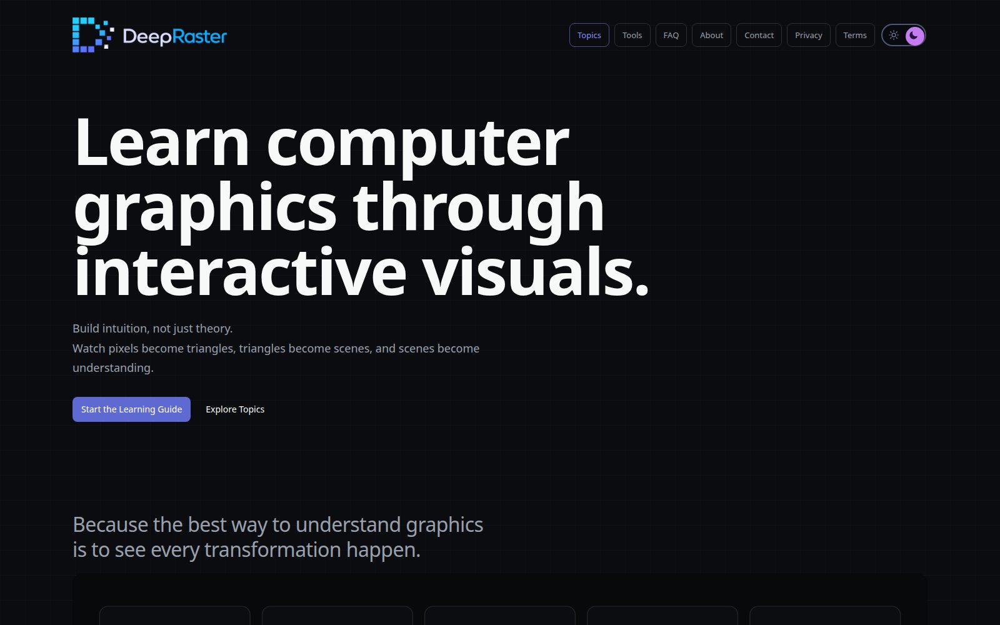

DeepRaster
An interactive computer-graphics learning platform. Instead of a demo that shows the final image, each lesson reveals how the image is made: inputs, intermediate steps and decisions.
Features
01Interactive lessons
Each article pairs a 2D lab with a 3D lesson you can step through, inspect and change.
02Own graphics engine
WebGPU and WebGL2 device backends behind one renderer, with a shared device pool.
03SVG diagram runtime
Turns static SVG diagrams into animated, validated, interactive explanations.
04Semantic timeline
Play, pause, seek and step over meaningful states, not just animation frames.
05Learning runtime
Deterministic lesson state; coordinated result, observer and inspector views.
06Astro site
MDX content with Zod-validated metadata, a prerendered search index, SEO tests.
07Performance budgets
CI fails the build if pages, search index or scripts exceed their limits.
08Content pipeline
Written authoring pipelines, asset validation, and a local article review server.
09Production ops
Cloudflare Workers static assets, LaunchDarkly observability with privacy-hardened replay.
A layered monorepo: dependencies only point down
What I chose, and what I didn't
| Decision | Rejected | Why |
|---|---|---|
| Own engine | Three.js / Babylon | The product teaches what engines hide: buffers, passes and state must be inspectable |
| Static-first Astro, islands | A single-page app | Articles ship zero JS; demos hydrate on their own; strong Core Web Vitals |
| Semantic state, separate from visuals | Animation-driven lessons | Seek, step and replay are exact; views can't corrupt learning state |
| Deterministic lessons (inputs + seed + step) | Free-running simulations | Reproducible explanations, testable without a browser |
| Size budgets in CI | Checking performance by eye | Regressions fail the build before users see them |
| WebGPU with WebGL2 backend | WebGPU only | Modern path where available, still works everywhere |
| Spec with MUST/SHOULD + ADRs | Informal conventions | Contributors and AI agents follow the same boundaries |
Meaning first, animation second
intersection-tested is data; an opacity tween is only a view of it. Seeking reconstructs the semantic state first, then views evaluate their visuals for that time. That's the same "state vs view" split as Redux, or RobotLens's snapshots.Zero JS by default, demos load only when seen
startWhenVisible() wraps an IntersectionObserver and returns a cancel function, so every observer, timer and GPU resource has a deterministic cleanup path.Performance you can't accidentally lose
scripts/scale-check.mjs inspects the production build and fails it when a limit is crossed. Content can grow to hundreds of articles without the site getting slower.
- Search: a prerendered JSON index, cached for an hour, instead of search text embedded in every page.
- Topics page: at most 30 rows rendered.
- Content: every article's metadata is validated by a Zod schema at build time.
- Delivery: static assets on Cloudflare's edge; no server to scale.
What this project proves
Static-first delivery
Plain articles ship no bundles; demos load per lesson, only when visible.
Budgets as tests
Page, index and script sizes fail the build instead of degrading silently.
Dual GPU backend
WebGPU and WebGL2 devices behind one renderer, with a device pool.
Reusable packages
7 packages, one-way dependencies, the framework at the edge.
Deterministic lessons
State from inputs + seed + step; views only observe; seek is exact.
Content at scale
Zod-validated MDX, authoring pipelines, asset validation, review tooling.
It's also where I practise explaining hard ideas simply. That's the same skill as mentoring engineers, and the reason my interview diagrams look the way they do.